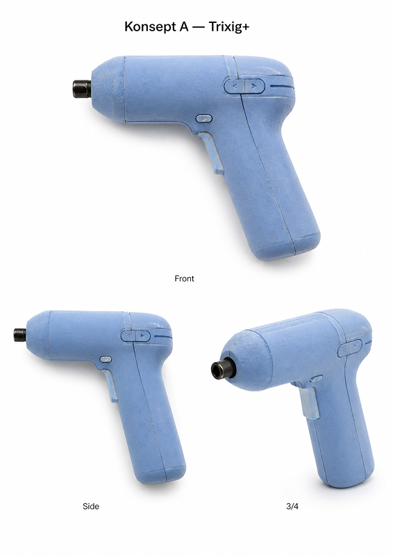
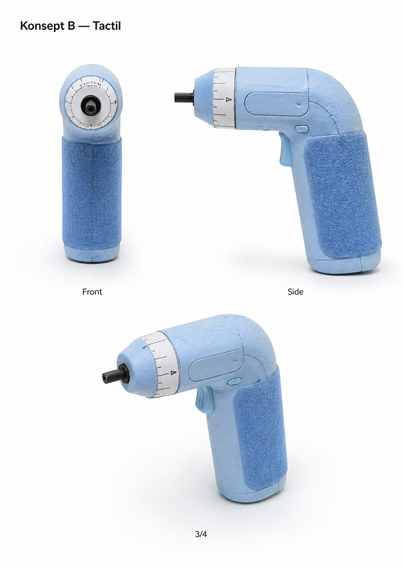
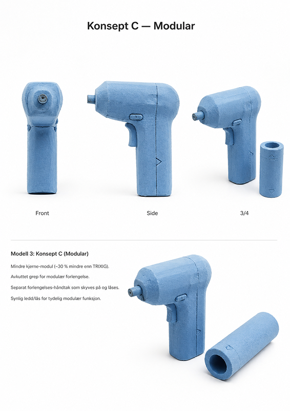

Batteriet i IKEA TRIXIG 3,6 V kan ikkje bytast av brukaren. Frå 18. februar 2027 krev EU-forordning 2023/1542, artikkel 11, at det skal kunne det. Dei tre konsepta svarar på det same problemet med tre strategiar, frå ei forsiktig forbetring til eit heilt modulsystem.
A
Trixig+
Forsiktig forbetring
Valt konsept

Behald form, fargar og produksjonsmetode. Endre berre det som må endrast.
Fem grep
M3 Torx T10-skruer i messinghylser i staden for sjølvgjengande skruer
Utskiftbar 18650-celle i holdar med fjørkontaktar
Asymmetrisk retningsbrytar: konveks med pil fram, konkav bak
Status-LED-stripe med fire prikkar bak på toppen
ISO 11469-merking og 30 % resirkulert ABS
Målpris
219 NOK
Passar i TRIXIG-serien
Høg
Same silhuett som originalen, men lett å kjenne att på skruene, brytaren og lyset.
B
Tactil
Ergonomisk oppgradering

Trixig+ som grunnlag, pluss ergonomiske og mekaniske forbetringar.
Fire grep utover Trixig+
TPE-overstøyp på grepet for betre friksjon og opplevd kvalitet
Mekanisk momentkopling som slepp når momentet blir for høgt, og vernar skruehovudet
Eigen knapp for arbeidslyset, skild frå avtrekkaren
Kraftigare motor: 7 Nm i staden for 5 Nm
Målpris
ca. 309 NOK
Passar i TRIXIG-serien
Middels
Nærmar seg Bosch IXO i pris og kan svekkje den demokratiske plasseringa til TRIXIG.
C
Modular
Systembasert

Skrutrekkaren blir ein modul i eit større TRIXIG-system. Kjernen blir mindre og enklare.
Tre modular
Kjernemodul, om lag 30 % mindre enn dagens TRIXIG
Forlengingshandtak med ekstra batteri som gjer kjernen til ein lett drill
Bitsmagasin som matar bits fortløpande ved seriemontering
Målpris
169 NOK (kjerne)
Passar i TRIXIG-serien
Låg
Med modular: 199–299 NOK. Bryt med prinsippet éin funksjon, eitt produkt, og krev redesign av heile serien.